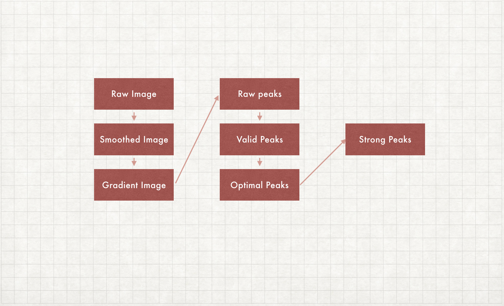
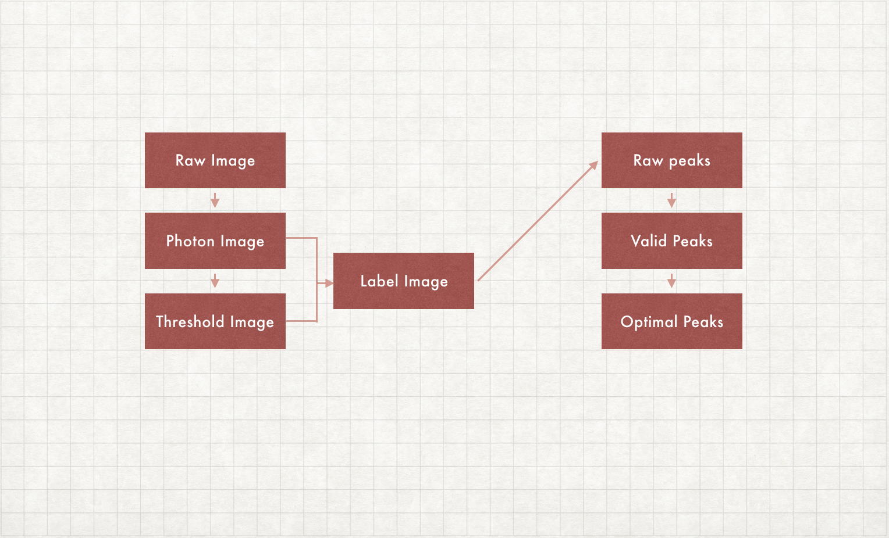

Currently, there are two hit finders in Click: snr model and poisson model. More precisely, they are peak finders, instead of hit finders. The first identify a peak if the snr of this region is higher than threshold, while the poisson model find peaks based on poisson probability.

The workflow is shown as above:
In snr model, there are 3 approach to calculate snr of peak in a 7 x 7 crop. The difference beween these methods is the definition of signal and backround region.
rings approach. Three radii parameter is spcified to define signal region and background region. The signal radius define the signal region and background inner/outer radius describe an annulus of background region.
simple approach. The top 20% (user-specified) pixels are signal region, while lowest 70% (user-specified) are background region.
adaptive approach. The lowest 70% (user-specified) are backround region, then signal threshold is calcaulated by background region: sig_thres = bg_val + n * sigma_val, where bg_val is the mean value and sigma is standard deviation of background region, n is user-specified parameter (sigma threshold).
The noise is defined as the standard deviation of background region, while the signal is defined as the mean value of signal region minus mean value of background value. Finally, snr is calculated by signal divided by noise.
Poisson model assume the photon count follows the Poisson distribution. For a pixel with background value $b$, the probability of photon count $K$: $P_{b}(K)={e^{-b}b^{K}}\Big/{K!}$. We can define a photon threshold $K^{*}$, by the cummulative probability:
$$K^{*}=\text{argmin}\sum_{K=0}^{K^{*}}P_{b}(K)>1-\epsilon$$
where $\epsilon$ is set to very small number, e.g. $10^{-5}$. If the photon count of this pixel is higher than this threshold, it’s assumed as signal pixel. Any connected signal region will be considered as peak candidates for further screening.

The workflow of poisson model is shown as above: